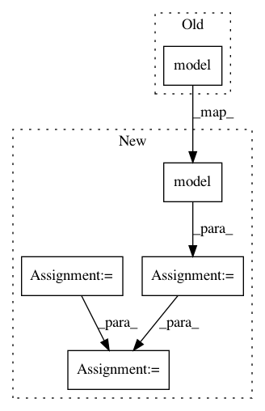

77a6ec73c53c5cc62a2ae451694537144afa5644,mnist/main.py,,test,#Any#,74
Before Change
print("Testing model: {}/{}".format(i, test_data.size(0)), end="\r")
batch_data.data[:] = test_data[i:i+TEST_BATCH_SIZE]
batch_targets.data[:] = test_labels[i:i+TEST_BATCH_SIZE]
test_loss += criterion(model(batch_data), batch_targets)
test_loss = test_loss.data[0]
test_loss /= (test_data.size(0) / TEST_BATCH_SIZE) // criterion averages over batch size
After Change
test_loss = 0
batch_data = Variable(torch.cuda.FloatTensor(TEST_BATCH_SIZE, 1, 28, 28), volatile=True)
batch_targets = Variable(torch.cuda.FloatTensor(TEST_BATCH_SIZE), volatile=True)
correct = 0
for i in range(0, test_data.size(0), TEST_BATCH_SIZE):
print("Testing model: {}/{}".format(i, test_data.size(0)), end="\r")
batch_data.data[:] = test_data[i:i+TEST_BATCH_SIZE]
batch_targets.data[:] = test_labels[i:i+TEST_BATCH_SIZE]
output = model(batch_data)
test_loss += criterion(output, batch_targets)
pred = output.data.max(1)[1]
correct += pred.long().eq(batch_targets.data.long()).sum()
test_loss = test_loss.data[0]
test_loss /= (test_data.size(0) / TEST_BATCH_SIZE) // criterion averages over batch size
print("TEST SET RESULTS:" + " " * 20)
In pattern: SUPERPATTERN
Frequency: 5
Non-data size: 5
Instances
Project Name: OpenNMT/OpenNMT-py
Commit Name: 77a6ec73c53c5cc62a2ae451694537144afa5644
Time: 2016-09-14
Author: alerer@fb.com
File Name: mnist/main.py
Class Name:
Method Name: test
Project Name: rusty1s/pytorch_geometric
Commit Name: 7fdc783c58c1b7a6f215ee55a17a798207ca42a8
Time: 2018-03-23
Author: matthias.fey@tu-dortmund.de
File Name: examples/faust.py
Class Name:
Method Name: train
Project Name: Zhaoyi-Yan/Shift-Net_pytorch
Commit Name: b829184a5428e540bccdc0419d89abd44e542d6b
Time: 2018-07-30
Author: v_yanzhaoyi@baidu.com
File Name: models/networks.py
Class Name: UnetSkipConnectionShiftTriple
Method Name: forward
Project Name: Zhaoyi-Yan/Shift-Net_pytorch
Commit Name: af4f099b9b40276242af26de63d0d8f33f8cc4cf
Time: 2018-07-30
Author: yanzhaoyi@outlook.com
File Name: models/networks.py
Class Name: UnetSkipConnectionBlock
Method Name: forward